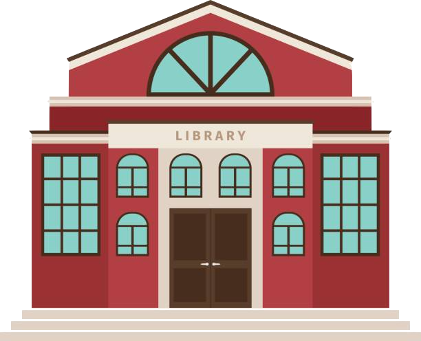

CircleCS - Free Coding Classes
Learn to code from scratch. No experience needed!
Join us at the Mount Vernon Public Library for FREE weekly coding classes!
Learn to code from scratch. No experience needed!
This is the perfect begginer class for students curious about technology and computers! We use Scratch, a free block based coding language developed by MIT to teach coding fundamentals. We start out with a seemingly simple question: What does it mean to code? We approach coding as a way to communicate with computers. A chain of code is like a set of instructions. Each block of code has a specific function and when put together, they create a program. This is a project based class. Every lesson, students are assigned a project to work on depending on their skill level. Projects begin simple, like making a sprite walk in a the shape of a square. As students progress, projects become more complex. By the end of the 4th lesson, students are able to design a game that incoorporates moving with arrow keys, keeping score, multiple charachters and switching backgrounds. This is treated as a drop-in course. There are students that attend weekly, biweekly, and sometimes more sporatically. In this course, we tailor material to each students skill level. Though there is a short presentatoin at the start of each class for weekly students that introduces and teaches a new concept, the bulk of class time is spent working on projects with one - on - one help from the instructor. Note: For in-person lessons at the Mount Vernon Public Library, computers are provided the library.
For online zoom lessons, we use Zoom to connect with students. Students will need a computer, tablet, or phone with a camera and microphone.